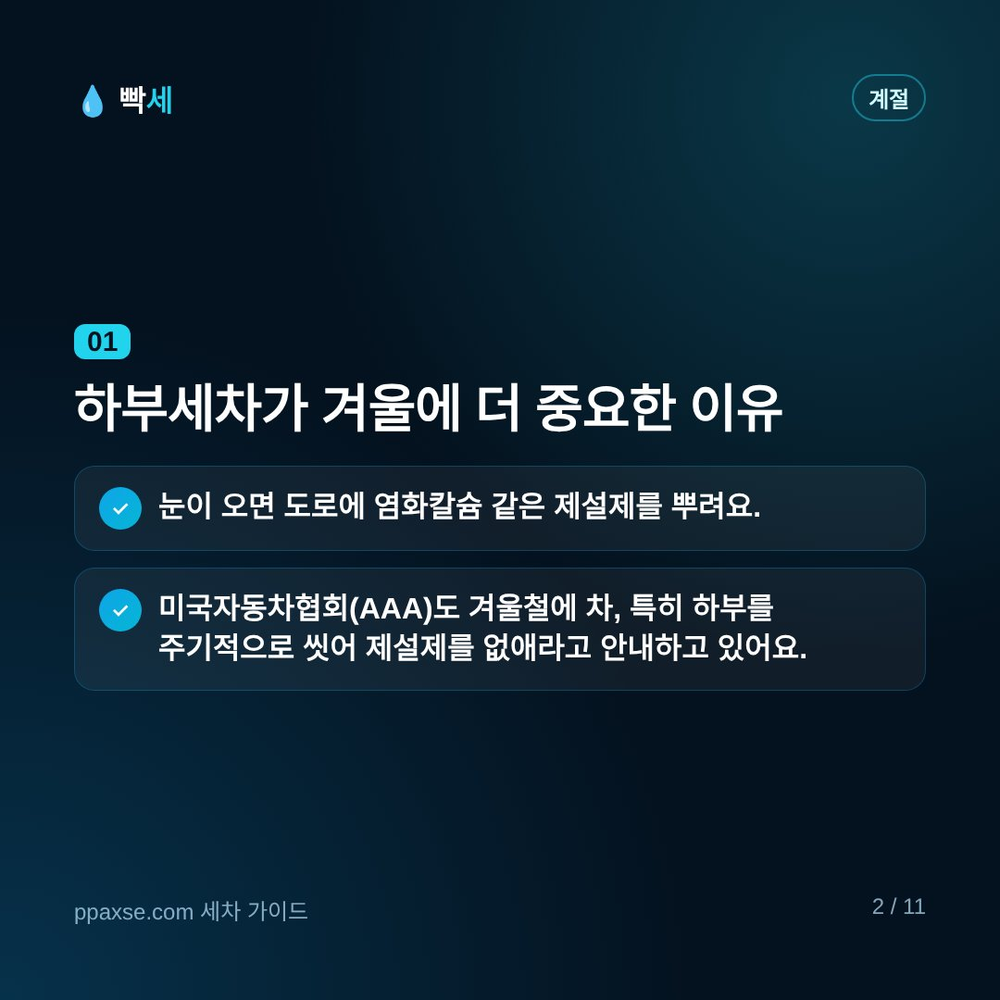
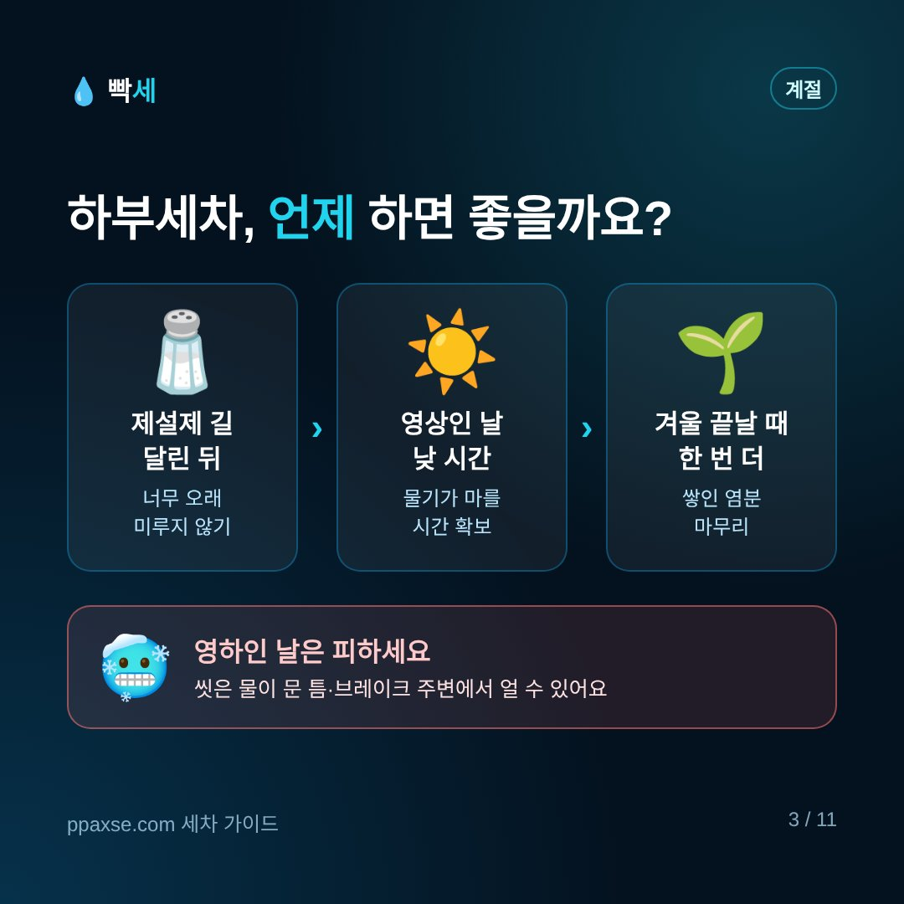
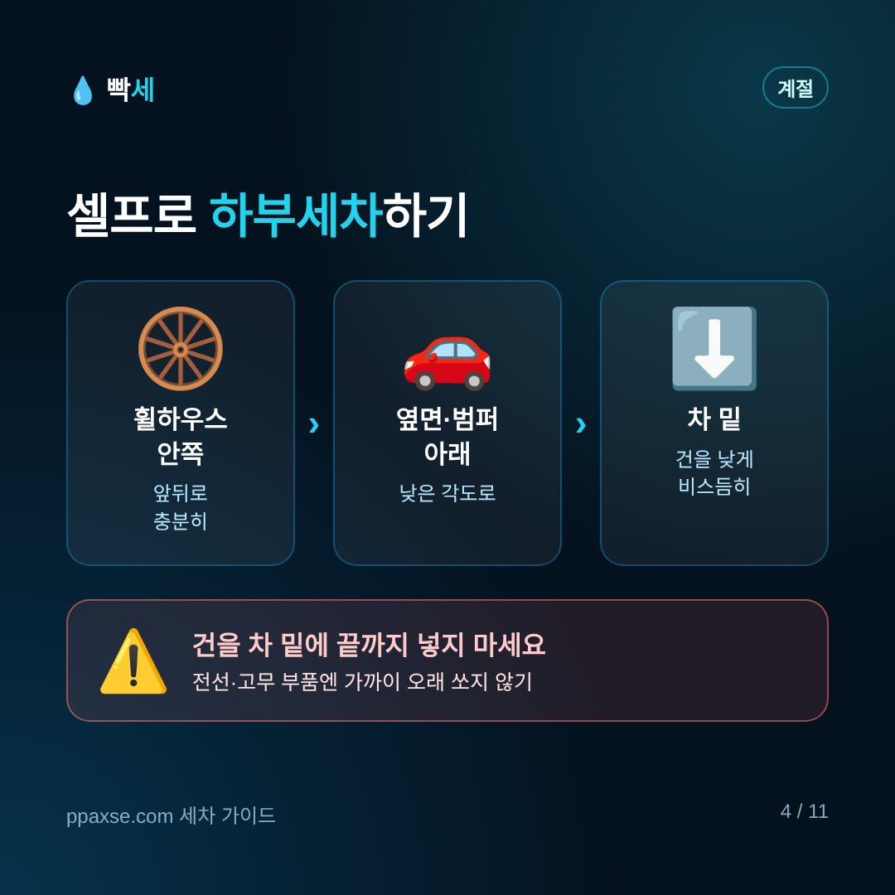
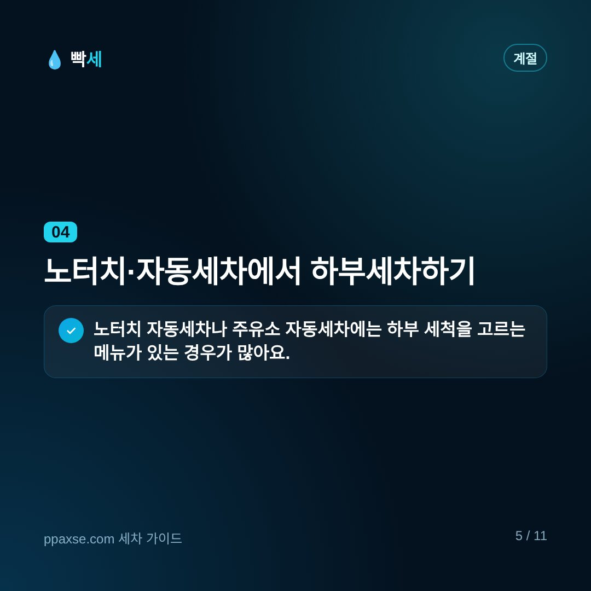
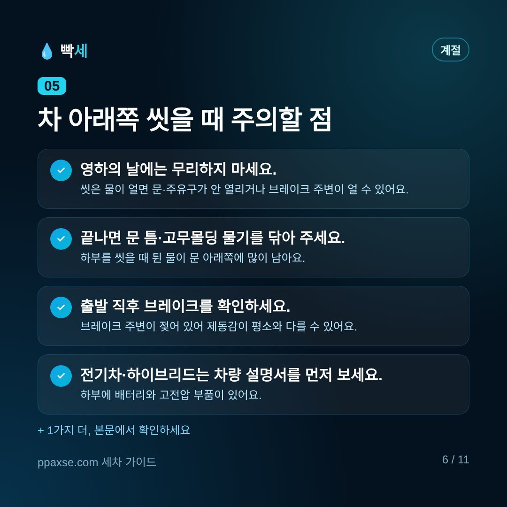
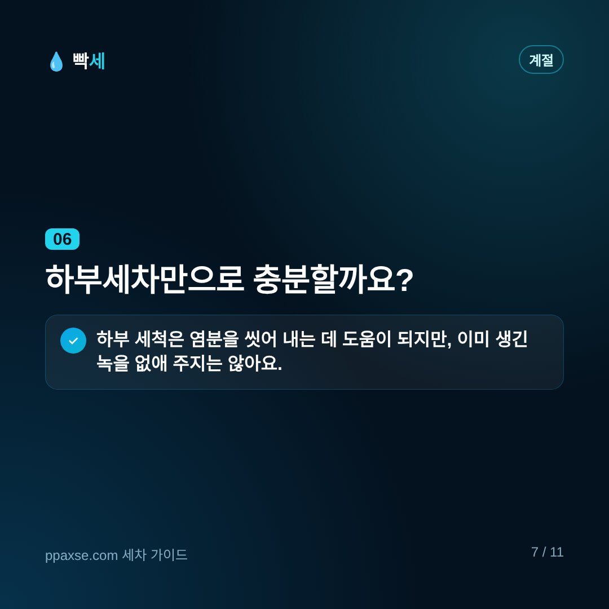
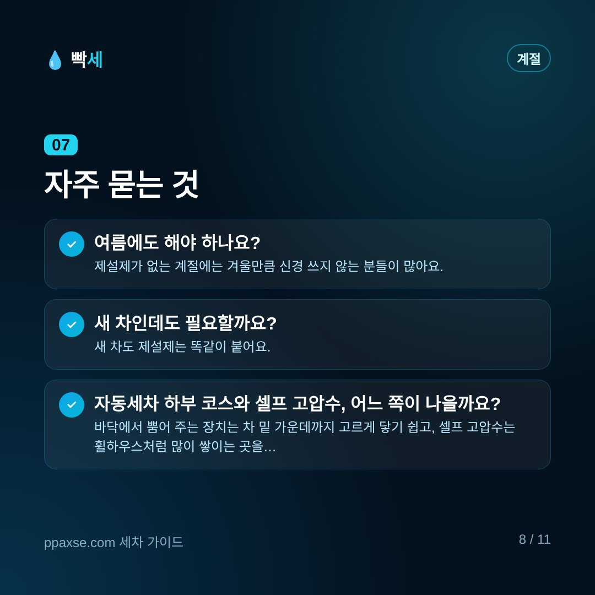

하부세차, 겨울에 꼭 해야 할까요? — 제설제와 하부 관리
제설제를 뿌린 길을 자주 달린다면, 겨울에는 하부세차를 챙기는 편이 좋아요. 제설제의 염분은 금속이 녹스는 것을 빠르게 하는데, 차 아래쪽은 눈에 잘 안 보여서 오래 방치되기 쉬워요. 겉면 광택보다 차 아래쪽 염분을 씻어 내는 게 겨울 세차의 핵심이라는 데는 의견이 크게 갈리지 않아요.
다만 얼마나 자주, 어떤 방식으로 할지는 사는 지역과 운전 환경에 따라 달라요. 이 글은 차 아래쪽 세척이 왜 필요한지와 세차장 종류별로 하는 방법을 정리했어요.
하부세차가 겨울에 더 중요한 이유

눈이 오면 도로에 염화칼슘 같은 제설제를 뿌려요. 이 염분이 눈 녹은 물과 섞여 타이어에 튀고, 차 바닥·휠하우스·서스펜션·브레이크 배관 주변에 달라붙어요. 마르면 하얀 가루처럼 남아 있다가, 습기가 생길 때마다 다시 녹아 금속 표면을 적셔요. 녹이 슬기 좋은 조건이 계속 이어지는 셈이에요.
미국자동차협회(AAA)도 겨울철에 차, 특히 하부를 주기적으로 씻어 제설제를 없애라고 안내하고 있어요. 국내에서도 겨울철에는 하부 세척을 챙기라는 이야기가 자주 나와요.
언제 하면 좋을까요?

- 제설제가 뿌려진 길을 달린 뒤 — 눈이 온 다음 날, 도로가 하얗게 얼룩진 날이 지난 뒤가 대표적이에요.
- 기온이 영상인 낮 시간 — 영하에서는 씻은 물이 하부·문 틈에서 얼 수 있어요. 해가 있을 때 하면 물기가 마를 시간이 생겨요.
- 겨울이 끝날 무렵 한 번 더 — 겨울 내내 쌓인 염분을 마지막으로 씻어 내려는 분들이 많아요.
눈이 그치고 도로가 마른 뒤에 하자는 분도 있고, 염분이 붙어 있는 시간을 줄이는 게 먼저라며 바로 하는 분도 있어요. 빡세는 제설제 길을 달린 뒤 너무 오래 미루지 않되, 영하가 아닌 날을 고르는 쪽을 기본으로 권해요. 매일 제설제 길을 달린다면 날씨 좋은 날 몰아서 하는 것도 방법이에요. 정답이라기보다 빡세가 생각하는 해답에 가까워요.
셀프세차장에서 하부세차하기

셀프세차장 중에는 하부세차 기능이 따로 있는 곳이 있어요. 바닥에서 물이 위로 뿜어져 나오는 장치를 차가 지나가거나, 정해진 자리에 차를 세우고 버튼을 누르는 방식이 많아요. 작동 방식과 시간은 세차장마다 다르니 현장 안내를 따르세요.
이런 장치가 없다면 고압수 건으로 직접 할 수 있어요.
- 휠하우스 안쪽을 앞뒤로 충분히 쏴요. 제설제가 가장 많이 쌓이는 곳이에요.
- 차 옆면 아래(사이드 스커트 안쪽)와 범퍼 아래를 낮은 각도로 쏴요.
- 건을 바닥 가까이 낮게 들고, 차 밑으로 비스듬히 넣어 쏴요. 몸을 숙여야 해서 미끄러운 바닥에서는 조심하세요.
고압수 건을 차 밑에 끝까지 넣거나 바닥에 끌지 마세요. 건이 상하거나 차 아래 부품에 부딪힐 수 있어요. 또 전선·커넥터·고무 부품이 보이는 곳에는 너무 가까이 대고 오래 쏘지 않는 게 좋아요.
노터치·자동세차에서 하부세차하기

노터치 자동세차나 주유소 자동세차에는 하부 세척을 고르는 메뉴가 있는 경우가 많아요. 기본 코스에 들어 있기도 하고, 따로 골라야 하기도 해요. 내가 고른 코스에 하부 세척이 들어 있는지 결제 전에 확인해 보세요. 셀프로 몸을 숙여 쏘기 어려운 분들은 겨울에만 이런 자동세차의 하부 코스를 쓰는 경우도 있어요. 자동세차 이용 전 확인할 것은 노터치 자동세차 이용법에 정리했어요.
차 아래쪽 씻을 때 주의할 점

- 영하의 날에는 무리하지 마세요. 씻은 물이 얼면 문·주유구가 안 열리거나 브레이크 주변이 얼 수 있어요.
- 끝나면 문 틈·고무몰딩 물기를 닦아 주세요. 하부를 씻을 때 튄 물이 문 아래쪽에 많이 남아요.
- 출발 직후 브레이크를 확인하세요. 브레이크 주변이 젖어 있어 제동감이 평소와 다를 수 있어요. 천천히 몇 번 살짝 밟아 보세요.
- 전기차·하이브리드는 차량 설명서를 먼저 보세요. 하부에 배터리와 고전압 부품이 있어요. 일반적인 세차는 괜찮도록 만들어지지만, 고압수를 가까이 대는 것에 대한 안내가 차마다 다를 수 있어요.
- 하부 코팅(언더코팅)이 되어 있다면 시공한 곳의 안내를 따르세요. 고압수를 아주 가까이서 오래 쏘면 코팅이 들뜬다는 이야기도 있어요.
하부세차만으로 충분할까요?

하부 세척은 염분을 씻어 내는 데 도움이 되지만, 이미 생긴 녹을 없애 주지는 않아요. 겨울이 지난 뒤 정기 점검 때 하부 상태를 한 번 봐 달라고 하는 분들도 있어요. 또 휠과 브레이크 주변에도 제설제가 많이 붙으니 휠도 함께 씻어 주세요. 휠 닦는 순서는 휠 세척 방법과 순서를, 겨울 셀프세차 전체 흐름은 겨울철 셀프세차 방법과 주의점을 참고하세요.
자주 묻는 것

- 여름에도 해야 하나요? — 제설제가 없는 계절에는 겨울만큼 신경 쓰지 않는 분들이 많아요. 다만 바닷가 근처를 자주 달리거나 흙길·비포장길을 다녀왔다면 가끔 씻어 주는 분들도 있어요.
- 새 차인데도 필요할까요? — 새 차도 제설제는 똑같이 붙어요. 하부에 녹이 생기기 전에 염분을 씻어 두는 게 목적이라, 차 나이와 상관없이 챙기는 분들이 많아요.
- 자동세차 하부 코스와 셀프 고압수, 어느 쪽이 나을까요? — 바닥에서 뿜어 주는 장치는 차 밑 가운데까지 고르게 닿기 쉽고, 셀프 고압수는 휠하우스처럼 많이 쌓이는 곳을 집중해서 씻기 좋아요. 둘 다 할 수 있다면 함께 쓰는 분들도 있어요.
하부세차 되는 세차장 찾기
하부 세척 장치, 온수, 실내 베이가 있는지는 세차장마다 다르고 자주 바뀌어요. 빡세 지도에서는 이런 시설 정보를 직접 다녀온 이용자들이 함께 채워가고 있어요. 지역별 세차장 모음에서 우리 동네 세차장을 찾아보고, 차 아래쪽까지 씻을 수 있는 곳을 알고 계시다면 한마디로 남겨 주세요. 겨울에 세차장을 찾는 다른 분들께 큰 도움이 돼요.
셀프세차·노터치·손세차를 종류별로 골라 보고, 폼건·온수·하부세차 같은 시설 정보도 확인할 수 있어요.
🗺️ 세차장 지도 열기✏️ 자주 가는 세차장에 한마디 남기기🎁 한마디를 남기면 가입 없이도 매주 기프티콘 추첨에 응모돼요.